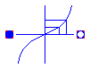
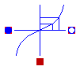
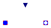

Anton Haumer
Technical Consulting & Electrical Engineering
A-3423 St.Andrae-Woerdern, Austria
email: a.haumer@haumer.at
Dr.Christian Kral & Markus Plainer
Österreichisches Forschungs- und Prüfzentrum Arsenal Ges.m.b.H.
arsenal research
Giefinggasse 2
A-1210 Vienna, Austria
Copyright © 1998-2007, Modelica Association, Anton Haumer and arsenal research.
The Modelica package is free software; it can be redistributed and/or modified under the terms of the Modelica license, see the license conditions and the accompanying disclaimer here.
| Name | Description |
|---|---|
| Pipe without heat exchange | |
| Pipe with heat exchange | |
| Simple valve |
 Modelica.Thermal.FluidHeatFlow.Components.IsolatedPipe
Modelica.Thermal.FluidHeatFlow.Components.IsolatedPipe
| Type | Name | Default | Description |
|---|---|---|---|
| Medium | medium | FluidHeatFlow.Media.Medium() | Medium in the component |
| Mass | m | 1 | Mass of medium [kg] |
| Temperature | T0 | Modelica.SIunits.Conversions... | Initial temperature of medium [K] |
| Length | h_g | 0 | Geodetic height (heigth difference from flowPort_a to flowPort_b) [m] |
| Simple Friction | |||
| VolumeFlowRate | V_flowLaminar | 0.1 | Laminar volume flow [m3/s] |
| Pressure | dpLaminar | 0.1 | Laminar pressure drop [Pa] |
| VolumeFlowRate | V_flowNominal | 1 | Nominal volume flow [m3/s] |
| Pressure | dpNominal | 1 | Nominal pressure drop [Pa] |
| Real | frictionLoss | 0 | Part of friction losses fed to medium |
| Type | Name | Description |
|---|---|---|
| FlowPort_a | flowPort_a | |
| FlowPort_b | flowPort_b |
model IsolatedPipe "Pipe without heat exchange"
extends Interfaces.Partials.TwoPort(final tapT=1);
extends Interfaces.Partials.SimpleFriction;
parameter Modelica.SIunits.Length h_g=0
"Geodetic height (heigth difference from flowPort_a to flowPort_b)";
equation
// coupling with FrictionModel
VolumeFlow = V_flow;
dp = pressureDrop + medium.rho*Modelica.Constants.g_n*h_g;
// no energy exchange with medium
Q_flow = Q_friction;
end IsolatedPipe;
 Modelica.Thermal.FluidHeatFlow.Components.HeatedPipe
Modelica.Thermal.FluidHeatFlow.Components.HeatedPipe
| Type | Name | Default | Description |
|---|---|---|---|
| Medium | medium | FluidHeatFlow.Media.Medium() | Medium in the component |
| Mass | m | 1 | Mass of medium [kg] |
| Temperature | T0 | Modelica.SIunits.Conversions... | Initial temperature of medium [K] |
| Real | tapT | 1 | Defines temperature of heatPort between inlet and outlet temperature |
| Length | h_g | 0 | Geodetic height (heigth difference from flowPort_a to flowPort_b) [m] |
| Simple Friction | |||
| VolumeFlowRate | V_flowLaminar | 0.1 | Laminar volume flow [m3/s] |
| Pressure | dpLaminar | 0.1 | Laminar pressure drop [Pa] |
| VolumeFlowRate | V_flowNominal | 1 | Nominal volume flow [m3/s] |
| Pressure | dpNominal | 1 | Nominal pressure drop [Pa] |
| Real | frictionLoss | 0 | Part of friction losses fed to medium |
| Type | Name | Description |
|---|---|---|
| FlowPort_a | flowPort_a | |
| FlowPort_b | flowPort_b | |
| HeatPort_a | heatPort |
model HeatedPipe "Pipe with heat exchange"
extends Interfaces.Partials.TwoPort;
extends Interfaces.Partials.SimpleFriction;
parameter Modelica.SIunits.Length h_g=0
"Geodetic height (heigth difference from flowPort_a to flowPort_b)";
Modelica.Thermal.HeatTransfer.Interfaces.HeatPort_a heatPort;
equation
// coupling with FrictionModel
VolumeFlow = V_flow;
dp = pressureDrop + medium.rho*Modelica.Constants.g_n*h_g;
// energy exchange with medium
Q_flow = heatPort.Q_flow + Q_friction;
// defines heatPort's temperature
heatPort.T = T_q;
end HeatedPipe;
 Modelica.Thermal.FluidHeatFlow.Components.Valve
Modelica.Thermal.FluidHeatFlow.Components.Valve
| Type | Name | Default | Description |
|---|---|---|---|
| Medium | medium | FluidHeatFlow.Media.Medium() | Medium in the component |
| Mass | m | 0 | Mass of medium [kg] |
| Temperature | T0 | Modelica.SIunits.Conversions... | Initial temperature of medium [K] |
| Real | frictionLoss | 0 | Part of friction losses fed to medium |
| Standard characteristic | |||
| Boolean | LinearCharacteristic | true | Type of characteristic |
| Real | y1 | 1 | Max. valve opening |
| VolumeFlowRate | Kv1 | 1 | Max. flow @ y = y1 [m3/s] |
| Real | kv0 | 0.01 | Leakage flow / max.flow @ y = 0 |
| Pressure | dp0 | 1 | Standard pressure drop [Pa] |
| Density | rho0 | 10 | Standard medium's density [kg/m3] |
| Type | Name | Description |
|---|---|---|
| FlowPort_a | flowPort_a | |
| FlowPort_b | flowPort_b | |
| input RealInput | y |
model Valve "Simple valve"
extends Interfaces.Partials.TwoPort(m=0, final tapT=1);
parameter Boolean LinearCharacteristic=true "Type of characteristic";
parameter Real y1(min=small)=1 "Max. valve opening";
parameter Modelica.SIunits.VolumeFlowRate Kv1(min=small)=1
"Max. flow @ y = y1";
parameter Real kv0(min=small,max=1-small)=0.01
"Leakage flow / max.flow @ y = 0";
parameter Modelica.SIunits.Pressure dp0=1 "Standard pressure drop";
parameter Modelica.SIunits.Density rho0 = 10 "Standard medium's density";
parameter Real frictionLoss(min=0, max=1) = 0
"Part of friction losses fed to medium";
protected
constant Real small = Modelica.Constants.small;
constant Real eps = Modelica.Constants.eps;
Real yLim = max(min(y,y1),0) "Limited valve opening";
Modelica.SIunits.VolumeFlowRate Kv "Standard flow rate";
public
Modelica.Blocks.Interfaces.RealInput y;
initial algorithm
assert(y1>small, "Valve characteristic: y1 has to be > 0 !");
assert(Kv1>small, "Valve characteristic: Kv1 has to be > 0 !");
assert(kv0>small, "Valve characteristic: kv0 has to be > 0 !");
assert(kv0<1-eps, "Valve characteristic: kv0 has to be < 1 !");
equation
// evaluate standard characteristic
Kv/Kv1 = if LinearCharacteristic then (kv0 + (1-kv0)*yLim/y1) else kv0*exp(ln(1/kv0)*yLim/y1);
// pressure drop under real conditions
dp/dp0 = medium.rho/rho0*(V_flow/Kv)*abs(V_flow/Kv);
// no energy exchange with medium
Q_flow = frictionLoss*V_flow*dp;
end Valve;